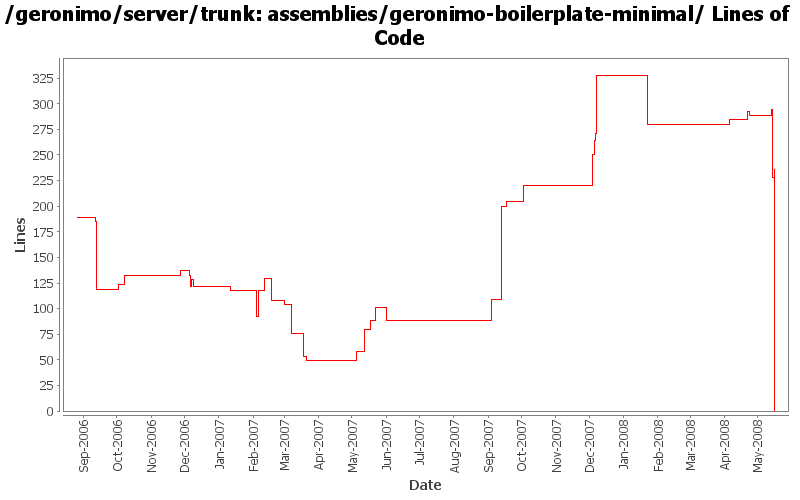

[root]/assemblies/geronimo-boilerplate-minimal
 src
(0 files, 0 lines)
src
(0 files, 0 lines)
 main
(0 files, 0 lines)
main
(0 files, 0 lines)
 assembly
(0 files, 0 lines)
assembly
(0 files, 0 lines)
 resources
(0 files, 0 lines)
resources
(0 files, 0 lines)
 bin
(0 files, 0 lines)
bin
(0 files, 0 lines)
 var
(0 files, 0 lines)
var
(0 files, 0 lines)
 config
(0 files, 0 lines)
config
(0 files, 0 lines)
 log
(0 files, 0 lines)
log
(0 files, 0 lines)
 security
(0 files, 0 lines)
security
(0 files, 0 lines)
 keystores
(0 files, 0 lines)
keystores
(0 files, 0 lines)
 underlay
(0 files, 0 lines)
underlay
(0 files, 0 lines)
 META-INF
(0 files, 0 lines)
META-INF
(0 files, 0 lines)
 bin
(0 files, 0 lines)
bin
(0 files, 0 lines)
 etc
(0 files, 0 lines)
etc
(0 files, 0 lines)
 META-INF
(0 files, 0 lines)
META-INF
(0 files, 0 lines)
 plexus
(0 files, 0 lines)
plexus
(0 files, 0 lines)
 rc.d
(0 files, 0 lines)
rc.d
(0 files, 0 lines)
 var
(0 files, 0 lines)
var
(0 files, 0 lines)
 config
(0 files, 0 lines)
config
(0 files, 0 lines)
 log
(0 files, 0 lines)
log
(0 files, 0 lines)

| Author | Changes | Lines of Code | Lines per Change |
|---|---|---|---|
| Totals | 65 (100.0%) | 696 (100.0%) | 10.7 |
| jdillon | 28 (43.1%) | 331 (47.6%) | 11.8 |
| djencks | 7 (10.8%) | 177 (25.4%) | 25.2 |
| gdamour | 7 (10.8%) | 74 (10.6%) | 10.5 |
| dwoods | 2 (3.1%) | 49 (7.0%) | 24.5 |
| kevan | 7 (10.8%) | 23 (3.3%) | 3.2 |
| jbohn | 2 (3.1%) | 21 (3.0%) | 10.5 |
| ccardona | 1 (1.5%) | 6 (0.9%) | 6.0 |
| akulshreshtha | 5 (7.7%) | 6 (0.9%) | 1.2 |
| gawor | 2 (3.1%) | 5 (0.7%) | 2.5 |
| prasad | 1 (1.5%) | 1 (0.1%) | 1.0 |
| jlaskowski | 1 (1.5%) | 1 (0.1%) | 1.0 |
| hogstrom | 1 (1.5%) | 1 (0.1%) | 1.0 |
| dain | 1 (1.5%) | 1 (0.1%) | 1.0 |
Drop -minimal suffix on the boilerplate, since we only have one of these now, the suffix is meaningless
0 lines of code changed in 3 files:
For simplicity just include the jetty + tomcat schemas in the boilerplate
10 lines of code changed in 1 file:
Tidy up bits which should be in the repo
1 lines of code changed in 1 file:
GERONIMO-4012 Rework GShell integration. Additonal changes on top of Jason's r655744 to use his new configs and to replace the gshell-embeddable usage with individual depends.
27 lines of code changed in 1 file:
Use project.
1 lines of code changed in 1 file:
Use ${project.build.outputDirectory}
4 lines of code changed in 1 file:
(GERONIMO-3985) Use SLF4J as the primary logging facade for Geronimo
12 lines of code changed in 1 file:
Use jar instead of resource-bundle
Tidy up poms
0 lines of code changed in 1 file:
(GERONIMO-3977) Use gmaven's ant 1.7.0 libraries which are compatible with Groovy and Windows
8 lines of code changed in 1 file:
(GERONIMO-3961) Upgrade to GMaven for Maven+Groovy integration, which uses Groovy 1.5.4
2 lines of code changed in 1 file:
*** Definition of annotations streamlining the definition of GBeanInfos.
* @GBean: optional annotation defining the name and j2eeType of a GBean.
If this annotation is not specified, then the default name is assumed to be
the class (simple) name and the default j2eeType is GBean.
* @Priority: optionalannotation defining the priority of a GBean.
* @ParamSpecial: annotation defining a GBean special attribute to be
injected.
* @ParamAttribute: annotation defining the GBean attribute to be injected.
* @ParamReference: annotation defining the GBean reference to be injected.
* @Persistent: annotation for setter methods turning the corresponding GBean
attributes into persistent attributes.
* @Reference: annotation for setter methods turning the corresponding GBean
attribute into a GBean reference.
Note that at most one constructor must be annotated with @ParamSpecial,
@ParamAttribute or @ParamReference.
*** Add a GBeanInfo factory strategy, GBeanInfoFactory, which allows us to
plug-in an annotation based GBeanInfo factory implementation.
*** Use annotation based GBeanInfo declaration for clustering related GBeans.
*** Use xbean-reflect to build GBean instances.
This fixes GERONIMO-3952 - Definition of GBeanInfo via annotations
5 lines of code changed in 1 file:
GERONIMO-3924 Make car-maven-plugin have a server-assembly packaging with lifecycle that avoids need for tools-maven-plugin
3 lines of code changed in 1 file:
Update LICENSE and NOTICE files. Merge from 2.1 branch
1 lines of code changed in 1 file:
upgrade trunk to 2.2-SNAPSHOT
1 lines of code changed in 1 file:
(GERONIMO-3747) Moved muck from components/* to more appropriate locations
1 lines of code changed in 1 file:
(GERONIMO-3747) Fixed parentage of module groups, though most still need to have their modules put into the proper groupId
Updated groupId of *everything* under framework/** to org.apache.geronimo.framework, and did my best to update all references
16 lines of code changed in 1 file:
(GERONIMO-3771) Moved maven-plugins/* to buildsupport/*, updated groupId to org.apache.geronimo.buildsupport
21 lines of code changed in 1 file:
GERONIMO-3607 cleanup, reduce size of boilerplate plugin by using repo instead
118 lines of code changed in 1 file:
add deployer.jar back into /bin for all assemblies - it was inadvertantly removed with an earlier change
7 lines of code changed in 1 file:
include jsr88-deploymentfactory.jar in /lib and client.jar in /bin again to get tck tests passing again. These were removed from assemblies with rev. 601152. djencks - I hope this is ok ... I'm sure you will let me know if it is not ;-)
14 lines of code changed in 1 file:
Add a couple of gshell commands to simplify the remote control of servers.
The commands being added are:
* alias: used to alias a commond along with some options and arguments.
etc/layout.xml provides a first aliasing mechanism: a hierarchical name is
mapped to a command. alias suplements this first aliasing mechanism with the
ability to alias a command along with its typical options and arguments.
* unalias: to remove an alias
* execute-alias: to execute an alias
* remote/rsh to start an rsh client
* remote/rsh-server to start an rsh-server
* remote-control/server-control to control a server
Samples for the aliasing commands:
// create the alias 'st' for the quoted command
> alias st 'geronimo/start-server -G server.name=yellow -D property=value'
// execute the alias 'st'. This executes the command in quote above
> excute-alias st
// display defined aliases
> alias
// remove the alias 'st'
> unalias st
Samples for the remote server control commands:
// start an rsh-server:
> remote/rsh-server tcp://localhost:9999
// remote 'start' the server 'defaultServer'
> remote-control/server-control start defaultServer
// remote 'stop' the server 'defaultServer'
> remote-control/server-control stop defaultServer
All the commands are implemented in Groovy. XML manipulations are done via
XmlSlurpers.
Aliases are stored in a configuration file located by default in
etc/aliases.xml
Server configurations, used by the remote control command, are stored in a
configuration file located by default in
etc/server-configuration.xml
New JARs are being added to lib/gshell for the support of the rsh bits.
30 lines of code changed in 1 file:
GERONIMO-3588 Upgrade XStream to 1.2.2
1 lines of code changed in 1 file:
GERONIMO-3496 assemble servers out of plugins
17 lines of code changed in 1 file:
copy geronimo-openejb-2.0.xsd to schema directory (GERONIMO-3439)
5 lines of code changed in 1 file:
Fix up some more assembly issues for using gsh
19 lines of code changed in 1 file:
Fixed things up so that the framework assembly can boot up
8 lines of code changed in 1 file:
Tidy up
2 lines of code changed in 1 file:
Update the minimal boilerplate to install gshell bits, and use the assembly plugin to facilitate more of the dirty work
179 lines of code changed in 1 file:
GERONIMO-3330 GERONIMO-3453 Use the new plugin schema Paul came up with. Use jaxb for geronimo-plugin xml handling. Modify the car-maven-plugin to generate geronimo-plugin.xml and explicitly specify the dependencies for the plan in pom.xml. This introduces several more jaxb libraries in lib which I hope can be removed again. Also the console plugin handling is barely working.
28 lines of code changed in 1 file:
* updated copyright date to 2007
1 lines of code changed in 1 file:
Changed trunk to 2.1-SNAPSHOT
1 lines of code changed in 1 file:
endorse override should not be necessary with latest cxf snapshot
0 lines of code changed in 1 file:
GERONIMO-3180 Override XML Parsing bugs in JRE 1.5 by providing our own xerces and xalan jars in lib/endorsed. Once JRE issues are resolved, we can consider removing these jars
13 lines of code changed in 1 file:
Fix EJB deployment errors. The ClassLoader used during OpenEJB annotation processing did not include any application dependencies. So, NoClassDefErrors could occur during deployment. Seems to be fixed with these changes
8 lines of code changed in 1 file:
GERONIMO-3153 Minimal assembly is missing corba spec classes. Note: This is a HACK to get the minimal assemblies working again and needs to be undone when the Yoko dependency is removed by G3155.
22 lines of code changed in 1 file:
Refactor the various CLIs such that oprtions parsing and arguments are done prior to boot the
boot configuration.
* Add a geronimo-cli JAR containing all the classes to perform options and arguments parsing. It is included in the lib/ folder and added to the Class-Path manifest entry of the deployer.jar, server.jar and client.jar runnable JARs;
* Use commons-cli to perform the option parsing; and
* add support for an extra verbose level, -vvv, and remap the verbose level as follows: -v -> INFO, -vv -> DEBUG, -vvv -> TRACE.
This fixes GERONIMO-3059 - CLIs refactoring - options and arguments parsing should be done prior the boot of a Kernel to provide a quicker feedback to users if they are invalid
9 lines of code changed in 1 file:
r6720@Bliss: jason | 2007-03-20 01:48:14 -0700
(GERONIMO-2995) Replace backport-util-concurrent usage with java.util.concurrent
0 lines of code changed in 1 file:
Apply MainBootstrapper boot approach to ClientCommandLine and Daemon to
reduce reliance on lib/ and uniform the way the CLI work.
This fixes GERONIMO-2978 - ClientCommandLine and Daemon improvement to reduce
reliance on lib/.
As part of this change, the RMIClassLoaderSpi implementation has been moved
from geronimo-system to geronimo-kernel as such an implementation must be
in the system class loader and geronimo-system is no longer imported by
the system class loader.
0 lines of code changed in 1 file:
GERONIMO-2454 xerces, xml-apis, and xalan are not needed in lib/endorsed running in java 5
0 lines of code changed in 1 file:
GERONIMO-2907 Remove dependency on mx4j
0 lines of code changed in 1 file:
(21 more)